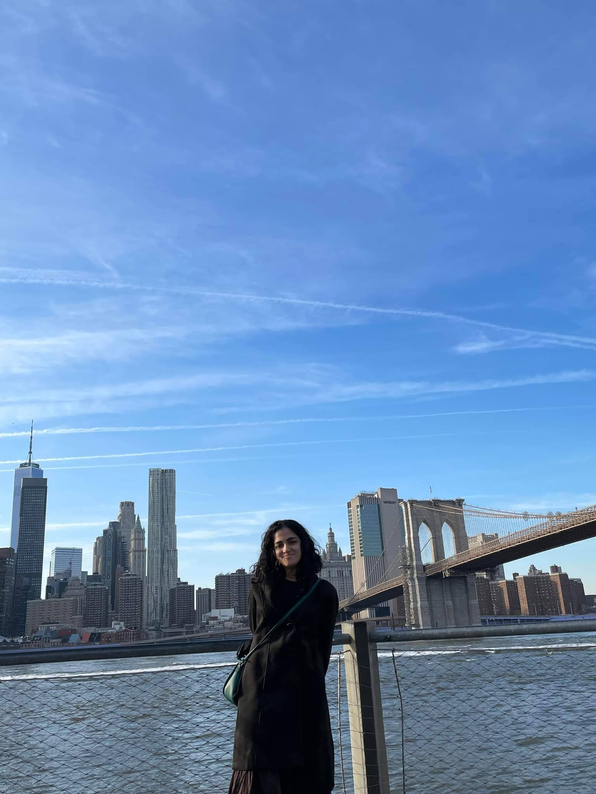

Michelle Davies Thalakottur (she/her)
Ph.D. Student at Programming Research Laboratory
Northeastern University, Khoury College of Computer Sciences
michelledaviest@gmail.com
CV |
Github |
LinkedIn
Hi there! I'm Michelle and I'm excited about Programming Languages and Compilers research. Most of my current work revolves around WebAssembly where I explore static analysis over WebAssembly, using WebAssembly as a compliation target from richly typed languages, and think about interoperation between WebAssembly and various host languages, the most popular one being Javascript. I do most of my work with my advisors at Northeastern - Amal Ahmed and Frank Tip.
Before my PhD, I worked on Compiler Generation and Data Flow Analysis with Uday Khedker at IIT Bombay. I have also spent a non-trivial amount of my time in these past four years working on making research more accessible to undergrad students and building community within Northeastern's Computer Science college.
All of my work during my PhD (so far) has been on WebAssembly. Some of this work has been towards static analysis of WebAssembly binaries. Our ISSTA23 ToughCall paper explores various challenges you might encounter during call graph construction over WebAssembly binaries. I've also spent sometime working on RichWasm, a semantic IR from richly typed source languages like ML and L3, to Wasm. I specifically worked on the compiler from RichWasm to Wasm. These days, I spend a lot of time thinking about real world interaction between JS applications and WebAssembly.
For my undergrad thesis project, I worked on formalizing the translations of a compiler at IITB called SCLP and generating code from these specs. This work is being carried forward by other students working with Professor Khedker, and is work that I am very excited about. In the summer of 2020, I worked on the problem of efficiently storing and operating on an incrementally discovered sparse family of sets, in order to make different analyses in Data Flow Analysis more scalable. The summer before that I visited IIT Patna and worked on problems in Dimensionality Reduction with Professor Jimson Mathew's lab.